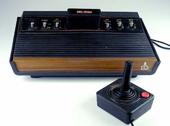

Introduction
Since I was a kid I have loved video games and the video game industry. I got my first sega master system 2 when I was four and a Playstation One when I was around 6. Ever since then I have owned every version of the Playstation console franchise and still have the consoles at home. The older I get the more I become interested in the design and coding aspect of games. I like seeing how companies come up with entire game concepts and how thought out character designs and backstories are. I also love The coding aspect of things, how software engineers bring these ideas to life and make worlds work. The more the gaming industry expands, the bigger the idea of competitive gaming as a sport becomes which I also find interesting. In this simple website I have outlined some history of console gaming, P.C. gaming and the rise of gaming as a sport.
The History of Games
The Early days
"Video games have been around since the early 1970s. The first commercial arcade video game, Computer Space by Nutting Associates, was introduced in 1971. In 1972, Atari introduced Pongto the arcades. An interesting item to note is that Atari was formed by Nolan Bushnell, the man who developed Computer Space. He left Nutting Associates to found Atari, which then produced Pong, the first truly successful commercial arcade video game.
Pong was a great hit when it came out. Move your cursor to get the slides to bounce back the moving square -- it will speed up as you progress. That same year, Magnavox offered the first home video game system. Dubbed the Odyssey, it did not even have a microprocessor! The core of the system was a board with about four-dozen transistors and diodes. The Odyssey was very limited -- it could only produce very simple graphics, and required that custom plastic overlays be taped over the television screen. In 1975, Atari introduced a home version of its popular arcade game, Pong. The original home version of Pong was sold exclusively through Sears, and even carried the Sears logo. Pong was a phenomenal success, opening the door to the future of home video games.
Although the Fairchild Channel F, released in 1976, was the first true removable game system, Atari once again had the first such system to be a commercial success. Introduced in 1977 as the Atari Video Computer System (VCS), the 2600 used removable cartridges, allowing a multitude of games to be played using the same hardware.
- MOS 6502 microprocessor
- Stella, a custom graphics chip that controlled the synchronization to the TV and all other video processing tasks
- 128 bytes of RAM
- 4-kilobyte ROM-based game cartridges
The chips were attached to a small printed circuit board (PCB) that also connected to the joystick ports, cartridge connector, power supply and video output. Games consisted of software encoded on ROM chips and housed in plastic cartridges. The ROM was wired on a PCB that had a series of metal contacts along one edge. These contacts seated into a plug on the console's main board when a cartridge was plugged into the system. When power was supplied to the system, it would sense the presence of the ROM and load the game software into memory. Systems like the Atari 2600, its descendant, the 5200, Coleco's ColecoVision and Mattel's IntelliVisionhelped to generate interest in home video games for a few years. But interest began to wane because the quality of the home product lagged far behind arcade standards. But in 1985, Nintendo introduced the Nintendo Entertainment System (NES), and everything changed.The NES introduced three very important concepts to the video game system industry:
- Using a pad controller instead of a joystick
- Creating authentic reproductions of arcade video games for the home system
- Using the hardware as a loss leader by aggressively pricing it, then making a profit on the games themselves

Nintendo's strategy paid off, and the NES sparked a revival in the home video game market that continues to thrive and expand even now. No longer were home video game systems looked upon as inferior imitations of arcade machines. New games that would have been impractical to create for commercial systems, such as Legend of Zelda, were developed for the home markets. These games enticed many people who had not thought about buying a home video game system before to purchase the NES. Nintendo continued to develop and introduce new game consoles. Other companies, such as Sega and Sony, created their own home video game systems. In the Console Page, we Will look a brief history of both Playstation and Xbox."
Arcade Machines
"The first popular "arcade games" included early amusement-park midway games such as shooting galleries, ball-toss games, and the earliest coin-operated machines, such as those that claimed to tell a person's fortune or that played mechanical music. The old Midways of 1920s-era amusement parks (such as Coney Island in New York) provided the inspiration and atmosphere for later arcade games. In the 1930s the first coin-operated pinball machines emerged. These early amusement machines differed from their later electronic cousins in that they were made of wood. They lacked plungers or lit-up bonus surfaces on the playing field, and used mechanical instead of electronic scoring-readouts. By around 1977 most pinball machines in production switched to using solid-state electronics both for operation and for scoring. In 1971 students at Stanford University set up the Galaxy Game, a coin-operated version of the Spacewar video game. This ranks as the earliest known instance of a coin-operated video game. Later in the same year, Nolan Bushnell created the first mass-manufactured game, Computer Space, for Nutting Associates. In 1972, Atari was formed by Nolan Bushnell and Ted Dabney. Atari essentially created the coin-operated video game industry with the game Pong, the first successful electronic ping pong video game. Pong proved to be popular, but imitators helped keep Atari from dominating the fledgling coin-operated video game market.